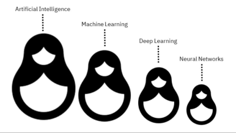
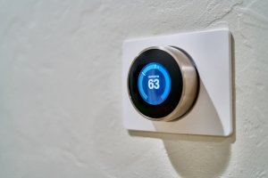

Should Building Owners Bet on AI to Be Net Zero?
Our deep dive into artificial intelligence and its impact on the building energy market
24 janvier 2023
Should Building Owners Bet on AI to Be Net Zero? Your guess may relate to the energy crisis, the Inflation Reduction Act, the weather causing business interruptions or compliance with new energy performance regulations – should building owners base their decisions on what they can’t control or what they do control, like new technologies such as Artificial Intelligence (AI).
At a recent gathering, a colleague reacted when he heard two letters pronounced together, “AI” for Artificial Intelligence. He said, “that is insane, it just can’t be”. Then at another event, another colleague reacted in a very different way, “early adopters will leave opponents behind in the smoke”. Both colleagues are quite clever, but AI is not dogmatic nor a new buzz, it’s pure technology.
How disruptive could AI be for building owners?
Analogies are great because they relate to something we know vs something we need to learn yet. Driving your car without Geospatial Positioning System (GPS) technologies will soon be like operating buildings without AI.
GPS technologies have progressed to the point that 60% of North Americans used it once a week in 2022– thanks to 31 satellites out of which 24 are guaranteed to provide service by rotating around earth twice a day. Every year, GPS capability gets more reliable and easier to use. Most importantly, businesses and citizens use GPS not just to get across town anymore. GPS technologies modernize healthcare systems, fleet management, child or pet safety, asset protection, freight tracking, national defense, and more. GPS is now part of our lives.
Organizations managing one, ten, hundreds or thousands of buildings should think of AI the same way. For many good reasons, AI is a technology that will stick. And for those thinking of AI as a threat, come on, anything misused or abused is a threat that requires regulation and what it takes to put it in full force.
First, what is AI?
Put simply, AI is a field combining computer science and datasets to create a unique solution. Some think its history started when Robert Nealey lost at a chess game against an IBM 7094 computer in 1962.
Artificial Intelligence vs. Machine Learning vs. Deep Learning vs. Neural Networks – All are sub-fields of AI however, neural networks are a sub-field of deep learning, and deep learning is a sub-field of machine learning. Reversibly, deep learning is the backbone of neural networks.
The easiest way to think about these scientific fields is to think of them like Russian dolls. Each is essentially a component of the prior term.

The way in which deep learning and machine learning differ is in how each algorithm learns. Deep learning can ingest unstructured data (e.g. text or images) to determine automatically a set of features to distinguish different categories of data. Machine learning is more dependent on human intervention to understand the differences between data inputs, usually requiring more structured data.
Neural networks, more specifically Artificial Neural Networks (ANNs), mimic the human brain through a set of algorithms. The “deep” in deep learning is just referring to the number of layers in a neural network, normally more than three layers.
The learning concept of a machine learning algorithm can be broken into three main parts.
Decision Process – In general, machine learning is used to make a prediction or classification. Based on input data, the algorithm produces an estimate of the pattern of a model.
Error Function – An error function evaluates the prediction of the model. If there are known examples, an error function can make a comparison to assess the accuracy of the model.
Optimization Process – If the model fits better to the data points, then weights are adjusted to reduce the discrepancy between the known example and the model estimate. The algorithm then repeats this process by updating weights autonomously until a threshold of accuracy has been met.
AI is a field combining computer science and datasets to create a unique solution. - IBM
Several machine learning algorithms are commonly used: neural networks, linear regression, logistic regression, clustering, decision trees or random forests. In the real world, AI relates to speech recognition, customer service, computer vision, recommendation engines, stock trading, fraud detection and energy management. For more details on AI techniques, we recommend reading IBM here.
What can AI do for building owners?
Many solutions are emerging in the building energy market. Smart thermostats or Building Management Systems (BMS) learn through occupancy, weather, temperatures, location (GPS technologies) and feedback when we change set points. After some time, it knows when to cool or heat the building or its spaces to keep people comfortable. So, chances are, you already bet on AI for your own building energy.

Building Energy AI (aka “BEAI”) is leveraged across the value chain to predict the impact of tariffs, outages, and CO2 emissions. Think of replacing a gas furnace with an energy efficient heat pump – will it be profitable? Is it more reliable and how much is it improving the carbon footprint?
Here is when AI becomes even more important, and a lot more complex. Energy costs are rising and breaking records, windstorms are causing frequent business interruptions, gas is going against net zero targets and the myriad of clean technologies and new equipment complicate drastically how to make well-informed decisions. Building owners now need to consider renewables and energy efficiency to keep energy costs lower, work around power outages and manage Science Based Targets (SBTi) for real.
Concretely, “what if” questions pile up: should we replace a diesel standby generator or go with a battery storage package? How many chargers do we need for electric vehicles? Should we first change windows or go with LED lighting? What could be the impact of electrification on our energy bills? Will we comply with the new building energy performance regulation? Will employees and customers leave us if we are not sustainable? And oh, which buildings should we convert first across hundreds of locations? Does our energy transition represent a burden or a strategic opportunity? Etcetera.
AI can automate simulations and project key benefits like it has never been possible – building owners can often get their answers and results easily ten times faster in comparison with traditional approaches.
The following mosaic outlines various AI applications for building energy, some algorithms are simpler, and some algorithms are a lot more advanced. The scopes of values touch buildings, companies or cities, market evolutions, partnerships and the convergence of Information Technologies and Operational Technologies.

AI can automate simulations and project key benefits like it has never been possible – building owners can often get their answers and results easily ten times faster in comparison with traditional approaches.
Knowing that the operation of buildings accounts for 30% of global greenhouse gas emissions, AI will be a determining factor to manage the 1.5-2.0 oC target by the end of the century.
Should building owners bet on AI to be net zero?
Building owners have two options to become net zero: a) traditional consulting and contracting approaches, or b) BEAI for a simpler, faster, and better transition.
Then it depends on when building owners start and finish. Some move immediately (no excuse), some get prepared (out of the Covid crisis), and others struggle with traditional approaches. Organizations will continue navigating through a confluence of crises and disruptions. With surging inflation, the war in Ukraine, more energy insecurity, and a potential global recession, they will have to draw a starting line. Which priority should be fair advice? Start with resilience, it is a vital “muscle”.
For building owners, energy independence via self-produced electricity and energy efficiency should be high on the list if not on top. Choices must be made, some may be trade-offs between climate mitigation and climate adaptation—rebuilding versus relocating, investing in better HVAC technologies versus keeping energy consumption down. Make no mistake, building a business with a net zero business model is no longer optional but urgent. Managing sustainability is an opportunity, if managed as an opportunity.
Sustainability should entail three fundamental objectives without any trade-off of one vs another: 1) reducing energy costs; 2) making operations more resilient; and 3) getting on a net zero path. Their weight can vary but in no case, these objectives should be managed separately. Difficult? It sure is and that is why AI is no longer optional. If your transition plan is not addressing those three together, you are potentially in trouble for a long time.
For building owners, energy independence via self-produced electricity and energy efficiency should be high on the list if not on top.
Governments and the entire financial industry will invest unprecedented sums of money. Building owners will have the chance to rely on historical measures to eliminate direct and indirect emissions from their buildings. Under the Biden administration, the United States pledged to reduce emissions by 50% by 2030 and 100% clean by 2035. Canada, the worst in the G20 for emissions per capita, has committed to reduce its emissions by 40 to 45% by 2030 on its path towards carbon neutrality by 2050. The conversion of buildings will be encouraged for several more years, but the task is gigantic. Fortunately, AI will be instrumental in making decisions, converting at a good pace, and boosting results.
The answer to the question is a clear YES, how could AI not be leveraged? How could you cross the city without GPS technologies? Same thing.
Conclusion and takeaways
So the answer to the title question is: “Betting on AI is now possible and necessary to remove complexity, reduce delays and improve results”.
Indeed, BEAI also includes knowledge digitization and engineering automation and other sorts of AI techniques that will be invented to manage the 1.5-2.0 oC target by 2100. Knowing that almost 30% of global emissions are directly tied to the operation of buildings, that we need to audit up to 6 million commercial and light industrial buildings solely in North America and that it would take 1,500 audits per week until 2030 to know why and how to convert them, building owners are really part of the solution.
In 2023, more CEOs and mayors will empower people to manage a solid net zero plan. Like GPS impacted our lives, BEAI will impact even further healthcare systems, fleets of vehicles, manufacturing operations, asset valuation, freight carriers, national defense, and more. In its 2022 Technology Trend Outlook, McKinsey scored applied AI and the future of clean energy both as the highest interests out of 14 trends.
That is why vadiMAP was created, to be the most powerful BEAI solution, readily available for any commercial and light industrial building anywhere. Think of BEAI as a prerequisite to the future of building energy, or if you will, the new decentralized energy made of connected objects to complement the century-old grid.
Let’s remember: “AI cannot replace an expert, but another expert using AI can replace another one.”
About the Author
Dan has over 25 years of experience in energy and automation markets. He worked with some of the globe’s largest international companies in this sector, on a national, North American and global basis. Currently, Dan leads vadimUS as the CEO.
References
How GPS Devices Have Changed the World | NewsWatchTV
What is Machine Learning? | IBM
What is Artificial Intelligence | Stanford.edu
Ambitious corporate climate action | Science Based Targets
The CEO’s guide to navigating turbulence | McKinsey
Six priorities for CEOs in turbulent times | McKinsey
How CEOs can square resilience with net-zero promises | McKinsey
McKinsey Technology Trends Outlook 2022 | McKinsey
Why The Building Sector? | Architecture 2030
Net-Zero Buildings | Project Drawdown
Energy Information Administration | Commercial Buildings Energy Consumption Survey (CBECS)
Global Energy Review: CO2 Emissions in 2020 | Analysis - IEA
Global Status Report for Buildings and Construction | Globalabc
Harnessing_AI_to_accelerate_the_Energy_Transition_| WEF 2021
…and precious AI and cloud computing papers from the creators of the vadiMAP solution.